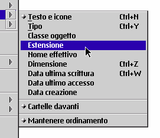

Nota bene: per evitare confusione, l'ordinamento avanzato Š inizialmente disabilitato. Lo si pu• abilitare dall'oggetto "Impostazioni &xwp;".
Le novit… relative alla funzione di ordinamento introdotte da &xwp; sono le seguenti:
Sono stati inseriti nuovi criteri di ordimanento come "Classe oggetto" ed "Estensione".
Inoltre, c'Š un nuovo "super-criterio" per tenere sempre le cartelle per prime, in aggiunta ai criteri standard. Per esempio, Š possibile ordinare per dimensione gli oggetti mantenendo le cartelle dinanzi al resto.
Il sottomenu "Ordina" di tutti i menu contestuali Š stato riorganizzato per accogliere le nuove voci:

Si pu• vedere come &xwp; aggiunge le voci di menu "Mantenere ordinamento"
e "Cartelle davanti".
Inoltre, Š ora possibile cambiare istantaneamente il criterio predefinito di ordinamento per una certa cartella semplicemente tenendo premuto il tasto "Maiusc" mentre si sceglie il nuovo criterio dal menu "Ordina".